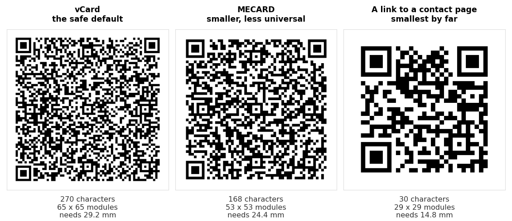

A vCard QR code carries contact details rather than a link. Scan one and the phone recognises a contact card and offers to save it, so a new acquaintance gets your name, number and email without typing a character or mishearing a digit.
The generating part is genuinely a minute of work. What takes thought is deciding what to put in, because every field you add makes the printed code denser, and a dense code on a small business card is the most common way these fail.
What a vCard QR code is
Inside the code is a short block of text in a format called vCard, the same format behind the .vcf files your phone exports when you share a contact. It looks like this:
BEGIN:VCARD
VERSION:3.0
FN:Sarah Mitchell
ORG:Northgate Design
TEL;TYPE=CELL:+14155550142
EMAIL:sarah@northgate.design
END:VCARD
That is all a vCard QR code is. The phone reads the text, recognises the BEGIN:VCARD opening, and offers to add a contact instead of opening a browser.
Two consequences worth knowing up front. The details are stored as plain text, so anyone who scans the code can read them, which is fine for a business card and worth thinking about for anything more private. And the code is static, so once printed it cannot be changed. New phone number, new code.
The four steps
- Decide what belongs in it. Name, one phone number and one email cover almost every use. More on this below.
- Fill in the generator. Our vCard QR code generator assembles the text and draws the code in your browser.
- Scan it back as plain text. Read the code with an ordinary scanner and check the vCard text with your own eyes.
- Test that it actually saves on a phone before anything goes to print.
Steps three and four take twenty seconds together and catch nearly everything that goes wrong.
Which fields to include
The temptation is to fill in everything. Resist it. A code holding a name, a phone number and an email is sparse, forgiving and prints small. The same code with a full postal address, a job title, a second number and a website is noticeably denser and has to be printed larger to stay readable.
| Field | Include it? | Why |
|---|---|---|
| Name | Always | Without it the saved contact is a nameless phone number |
| Phone | Usually | The main reason people save a contact |
| Usually | Cheap in space and almost always wanted | |
| Company | If relevant | Helps people remember who you are months later |
| Website | Only if short | A long URL costs more than it returns |
| Job title | Rarely | It is on the card already, in larger type |
| Postal address | Rarely | The most expensive field by a distance |
| Photo | No | It does not fit. We measured this in detail |
The photo row is not a style preference. A real photo cannot be made to fit inside a QR code at all, and even a tiny thumbnail pushes the code past what a business card can hold. We put numbers on it in can you put a photo in a vCard QR code.
If you want the exact millimetre cost of each field against the space on a business card, that is QR code for a business card.
What we measured: three ways to encode the same person
vCard is not the only format a phone will recognise. We took one complete contact, name, company, job title, mobile, email, website and a full postal address, and encoded it three ways at error correction level M. Then we decoded each code back and confirmed it matched.

| Format | Characters | Grid | Smallest usable print |
|---|---|---|---|
| vCard 3.0, full contact | 270 | 65 x 65 | 29.2 mm |
| vCard 4.0, full contact | 284 | 65 x 65 | 29.2 mm |
| MECARD, same contact | 168 | 53 x 53 | 24.4 mm |
| vCard 3.0, name and mobile and email only | 133 | 49 x 49 | 22.8 mm |
| MECARD, name and mobile and email only | 71 | 37 x 37 | 18.0 mm |
| A link to a contact page | 30 | 29 x 29 | 14.8 mm |
MECARD is the compact alternative. It carries the same information in a terser syntax, and in our test it saved 4.8 mm of printed width in both the full and the trimmed version. That is a real saving on a business card where you have perhaps 15 mm to spend.
The catch is support. vCard is what phones have handled for decades and what every scanner expects. MECARD is widely recognised but not as universally as vCard, and nothing on a printed card tells a person which one they are about to scan. For something you print once and hand out for a year, we would take the 4.8 mm penalty and use vCard.
Trimming the fields beats changing the format. Dropping the address, title and website took vCard from 29.2 mm to 22.8 mm, a saving of 6.4 mm. That is more than MECARD bought us, it carries no compatibility question at all, and nobody misses the fields.
The last row is worth a thought if the code is going somewhere small. A link to a page with your details on it prints at 14.8 mm, half the width of the full vCard, and you can update the page afterwards. What you lose is the one scan that saves the contact directly, which is the whole appeal.
vCard 3.0 or 4.0
You may see generators offering a choice of version. The short answer is that 3.0 is the safer default, and our generator uses it.
We measured whether the version costs anything, and it does not. The same contact came out at 270 characters in 3.0 and 284 in 4.0, and both produced an identical 65 by 65 code. The extra characters fell inside the same size step, so the version choice is free.
Since it is free either way, pick on compatibility rather than size. Version 3.0 has been around far longer and is what the widest range of phones and apps read without complaint. Version 4.0 is the newer standard with tidier handling of some fields, but there is nothing in a normal business contact that needs it.
Testing it before you print
Two tests, and they check different things.
Read the text. Scan the code with an ordinary QR scanner rather than letting the phone handle it as a contact. Our scanner will show you the raw vCard text, and so will any other. You are looking for a typo in the number, a missing character in the email, an accent that did not survive. This catches content mistakes.
Save the contact. Then scan it properly on a phone and go through with saving it. Open the saved contact afterwards and check the name landed in the name field and the number in the number field. This catches structure mistakes, which the first test cannot show you.
Do the second test on a phone that is not yours if you can. You know what the details are meant to say, which makes it easy to read past an error.
We run the same checks on our own tool. We generate on the live site, decode the result back, and compare every field against what was typed, including accented names such as José Muñoz and company names with accents. All of it round trips correctly. We would rather verify than assume.
Mistakes that cost a print run
Printing it too small. The single most common one. A full vCard needs 29.2 mm as a floor, and a business card usually has 12 to 18 mm of room. The numbers do not meet, so either the fields come down or the code goes somewhere other than the card.
A phone number without a country code. It works for people in your country and fails for everyone else. Write it in full international form, starting with a plus.
Raising error correction without checking the size. Level H sounds safer and makes the code considerably larger for the same contact, which on a small card makes scanning worse rather than better. Level M is the right default here.
Printing before testing on a phone. Everything above is recoverable at the generator stage and permanent once it is on five hundred cards.
If something already printed will not scan, the symptoms and their causes are in why won't this QR code scan.
Common questions
Does a vCard QR code need the internet?
No. The contact details are inside the code, so it works with no signal at all. That is its main advantage over printing a link to a contact page.
Can I change the details later?
Not on a printed code. It holds the text it was made with and nothing behind it can be edited. If your number changes often, point the code at a page you control instead and see static vs dynamic QR codes.
What is the difference between vCard and MECARD?
Both carry contact details. MECARD uses a shorter syntax, which in our test produced a code 4.8 mm smaller for the same person. vCard is older and more universally supported, which is why it remains the safer choice for anything printed.
Can I turn a .vcf file into a QR code?
Yes, because a .vcf file is vCard text. Open it in a text editor and you will see the same BEGIN:VCARD block. Be aware that a contact exported from a phone often carries far more than you want to print, sometimes including a photo, so it is usually smaller and cleaner to type the few fields you need into a generator.
How big should I print it?
Take the floor from the table above and add margin. A trimmed vCard needs 22.8 mm as a minimum, so aim for 25 to 30 mm on a card someone holds. Our sign size guide covers larger formats.
Will it work on both iPhone and Android?
vCard is the format both have read for years, and a correctly built code contains nothing platform specific. The wording of the prompt differs between them, which is cosmetic. Test on one of each if you have both to hand.
Is my phone number safe in there?
It is readable by anyone who scans the code or photographs it. For a business card that is the point. For anything you would not print on the card itself in plain type, use a link to a page you control instead.